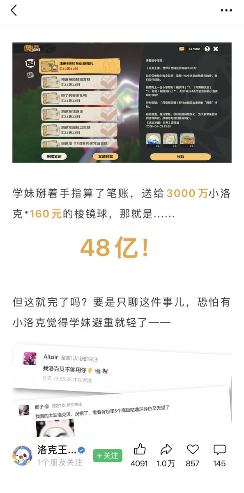

サイバー環状線
@CyberKanjousen
@notanumber8899

サイバー環状線
@CyberKanjousen
感谢推友提醒，经检索，原公告应是「48 亿」而非「659.4亿」，并且称呼是「学妹」而非「学长学姐」。对于主题推文的错误環状線深感抱歉。
但即使是 48 亿，原公告也是相当抽象了…… https://t.co/I1SjTrOlEl
Not a Number
@notanumber8899
@CyberKanjousen 这个截图的出处是？